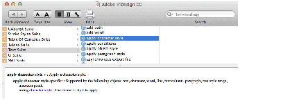
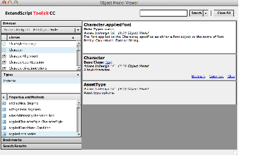
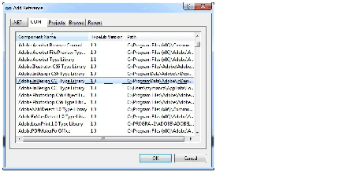
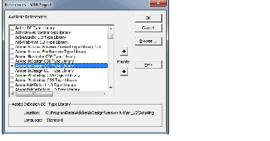
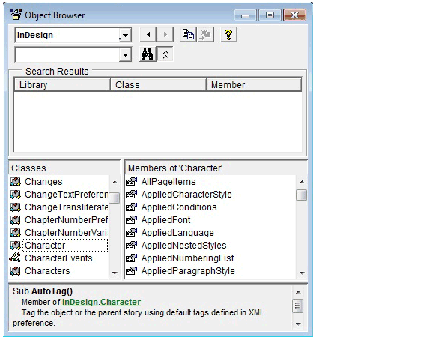
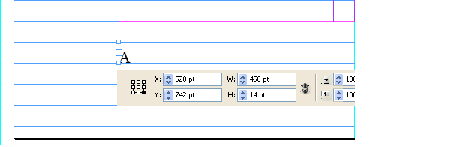

Introduction
This document is for end users and developers alike. If you never created a script before, we show you how to get started. If you wrote scripts for other applications, we show you how to apply your knowledge to InDesign scripting.
The document also covers how to install and run an InDesign script and describes what InDesign scripting can and cannot do. We discuss the software you need to start writing your own scripts.
After you learn the basics of InDesign scripting in this tutorial, you can move on to the Adobe InDesign Scripting Guide, which explores scripting in more depth. The Adobe InDesign Scripting Guide contains hundreds of tutorial scripts covering topics like text formatting, finding and changing text, associating scripts with menu items, drawing objects on a page, and exporting documents.
Getting started
Almost anything you can do with the user interface; you can do with a script. You can draw frames, enter and format text, place graphics, and print or export the pages of the document. Any action that can change a document or its contents can be scripted. There even are a few things you can do in scripting that you cannot do using the user interface.
Scripts can create menus, add menu items, create and display dialog boxes and panels, and respond to user-interface selections. Scripts can read and write text files, parse XML data, and communicate with other applications.
Scripts can do everything from very small tasks (like setting a tab stop at the location of the text cursor) to providing complete features. You can start with simple scripts that do only one thing and move on to scripts that automate your entire publishing workflow.
Most of the things scripting cannot do-like setting up a workspace or defining a set of keyboard shortcuts-are things that have to do with the user interface. In addition, scripts cannot add new types of objects to an InDesign document or add new, fundamental capabilities to the program, like a new text-composition engine. For that type of extensibility, you must use the InDesign Software Development Kit (SDK), which shows you to write compiled plug-ins using C++.
We tend to think of scripting in terms of long, repetitive tasks, like laying out a phone book. It also is good for things like the following:
- Automating the myriad, small, annoying tasks that you face every day.
- Customizing InDesign to match your work habits and layouts.
- Achieving creative effects that would be difficult or impossible to attain by other means.
Installing scripts
Installing an InDesign script is easy: put the script file in the Scripts Panel folder inside the Scripts folder in your InDesign application folder. (Create the Scripts folder if it does not already exist.) Note: this may require admin access.
Alternately, put the script inside the Scripts Panel folder in your preferences folder. Your preferences folder is at:
- Windows: C:\Users\<username>\AppData\Roaming\Adobe\InDesign\Version 18.0\<locale>\Scripts
- Mac: /Users/<username>/Library/Preferences/Adobe InDesign/Version 18.0/<locale>/Scripts
where <username> is your user name and <locale> references your location and language, for example, en_US.
Once the script is in the folder, it appears on the Scripts panel inside InDesign. To display the panel, choose Window > Utilities > Scripts.
You also can put aliases/shortcuts to scripts (or to folders containing scripts) in the Scripts Panel folder, and they will appear in the Scripts panel.
To run a specific script when InDesign starts, put the script inside a folder named "Startup Scripts" inside the Scripts folder (create this folder if it does not already exist).
Running a script
To run a script, display the Scripts panel (choose Window > Utilities > Scripts), then double-click the script name in the Scripts panel. Many scripts display user-interface items (like dialog boxes or panels) and display alerts if necessary.
Using the scripts panel
The InDesign Scripts panel is the easiest and best way to run most InDesign scripts. If the panel is not already visible, you can display it by choosing Window > Utilities > Scripts.
Scripts run from the Scripts panel run faster than scripts run from the Finder (Mac) or Explorer (Windows).
Another way to make scripts run faster is to turn off screen redraw while the script is running. To do this, turn off the Enable Redraw from the Scripts panel menu. To view the script actions as they execute, turn this option on.
The Scripts panel can run compiled or uncompiled AppleScripts (files with the file extension .spt, .as, or .applescript), JavaScripts (files with the file extension .js or .jsx), VBScripts (files with the extension .vbs), or executable programs from the Scripts panel.
To edit a script shown in the Scripts panel, select the script and choose Edit Script from the Scripts panel menu. Alternatively, you can hold down Option (Mac OS) or Alt (Windows) key and double-click the script's name. This opens the script in the editor you defined for the script file type.
To open the folder containing a script shown in the Scripts panel, select the script and choose Reveal in Finder (Mac OS) or Reveal in Explorer (Windows). Alternatively, you can hold down the Command (Mac OS) or Ctrl-Shift (Windows) keys and double-click the script's name. The folder containing the script opens in the Finder (Mac OS) or Explorer (Windows).
Scripts generally run as a series of actions, which means you can undo the changes the script made to a document by choosing Undo from the Edit menu. This can help you troubleshoot a script, as you can step backward through each change. Scripts can change the undo mode and store all of the script actions as a single undo step. This can significantly speed up script execution. For more on how to do this, refer to the Adobe InDesign Scripting Guide for the scripting language of your choice.
To add a keyboard shortcut for a script, choose Edit > Keyboard Shortcuts, select an editable shortcut set from the Set menu, then choose Product Area > Scripts. A list of the scripts in your Scripts panel appears. Select a script and assign a keyboard shortcut as you would for any other InDesign feature.
About scripting languages
The language you use to write scripts depends on the scripting system of your platform: AppleScript for Mac OS, VBScript for Windows, or JavaScript for either platform. Although the scripting languages differ, the ways they work with InDesign are very similar.
Each sample script in this document is shown in all three scripting languages. Translating a script from one language to another is fairly easy.
JavaScript
InDesign supports JavaScript for cross-platform scripting in both Mac OS and Windows. InDesign's JavaScript support is based on an Adobe implementation of JavaScript known as ExtendScript. The ExtendScript interpreter conforms to the ECMA 262 standard for JavaScript. All language features of JavaScript 1.5 are supported. Illustrator, Photoshop, and other Adobe Creative Cloud products also use the ExtendScript JavaScript interpreter.
Although you can write scripts using other versions of JavaScript, such as Microsoft JScript (in Windows) or Late Night Software's OSA JavaScript (on the Mac OS), the terms you use in those languages are not the same as the terms you use in ExtendScript. ExtendScript examples do not work in other JavaScript versions.
- Note
- Because ExtendScript tools and features are used in several Adobe products, we consolidated all ExtendScript documentation. To learn more about JavaScript utilities like the ScriptUI user-interface module and the ExtendScript Toolkit (a JavaScript development environment and object-model inspector), see the JavaScript Tools Guide which is part of ExtendScript Toolkit.
Windows
To use InDesign scripting on Windows, you can use either JavaScript or some version of Microsoft Visual Basic, such as VBScript.
The Visual Basic tutorial scripts are written in VBScript. We chose VBScript because no added software is required to run or edit VBScripts; you can edit them with any text editor (like Notepad) and run them using the InDesign Scripts panel.
Other versions of Visual Basic, that ship with Microsoft Visual Studio, do not work well, because they lack the Variant data type, which is used extensively in InDesign scripting.
Many applications contain Visual Basic for Applications (VBA), like Microsoft Word, Microsoft Excel, Microsoft Visio, or AutoCAD. Although you can use VBA to create InDesign scripts, InDesign does not include VBA.
To use VBScript or Visual Basic for InDesign scripting in Windows, you must install InDesign from a user account that has Administrator privileges. After you complete the installation, any user can run InDesign scripts, and any user with Power User or Administrator privileges can add scripts to the InDesign Scripts panel.
Mac OS
To use InDesign scripting on Mac OS, you can use either JavaScript or AppleScript. To write AppleScripts, you must have AppleScript version 1.6 or higher and an AppleScript script editor. AppleScript comes with all Apple systems, and it can be downloaded free from the Apple Web site. The Apple Script Editor is included with the Mac OS; access it from the menus:
- Applications > Utilities > Script Editor
Which scripting language should you use?
If you have written scripts before, use whatever language you know. If you have never written scripts before or if you need to make your scripts work on both the Mac OS and Windows versions of InDesign, use JavaScript. If you need to communicate with other, non-Adobe applications on your system, use the appropriate, platform standard language (AppleScript on Mac OS or VBScript in Windows).
We cannot fully document the language features of AppleScript, JavaScript, or VBScript, so you may need documentation for any or all those scripting languages.
- Note
- You also can use almost any other programming language (like Python or C#) that can connect to the platform standard automation system; that is beyond the scope of this document.
How to use the scripts in this document
To view or edit any script shown in this document, open the corresponding tutorial script file (the filename is given before each script) in the script editing application of your choice.
To run a script, install the script in your Scripts Panel folder (see Installing scripts), then:
- Choose Windows > Utilities > Scripts to display the Scripts panel.
- Double-click the script name in the Scripts panel to run the script.
To save a script you've edited, save the script as a plain text file in the Scripts Panel folder (see Installing scripts), using the appropriate file extension:
AppleScript: .applescript
JavaScript: .jsx
VBScript: .vbs
- Note
- If you are entering the JavaScript examples shown in this document, it is very important to use the same capitalization shown in the example. JavaScript is case-sensitive, and the scripts will fail if they do not use the capitalization shown. The AppleScript and VBScript examples are not case-sensitive. Again, it's better to use the script files that come with this tutorial.
-
If you are copying and pasting scripts from this document, be aware that line breaks caused by the layout of the document can cause errors in your script. As it can be very difficult to find such errors, we recommend that you use the scripts that come with this tutorial.
Your first InDesign script
Next, we will create an InDesign script that creates a new document, adds a text frame, and enters text in the text frame. This demonstrates how to do the following:
- Establish communication with InDesign.
- Create a new document.
- Create a text frame on a specific page.
- Add text to a text frame.
AppleScript
Start the Script Editor application. Enter the following script:
--HelloWorld.applescript
--An InDesign AppleScript
--
tell application "Adobe InDesign 2024"
set myDocument to make document
tell page 1 of myDocument
set myTextFrame to make text frame
set geometric bounds of myTextFrame to {"6p", "6p", "24p", "24p"}
set contents of myTextFrame to "Hello World!"
end tell
end tell
Save the script as text with the file extension .applescript to the Scripts Panel folder (see Installing scripts). To run the script, double-click the script name in the Scripts panel or click Run in the Script Editor window.
JavaScript
Start the ExtendScript Toolkit (or a text editor) and enter the following script:
var myDocument = app.documents.add();
var myTextFrame = myDocument.pages.item(0).textFrames.add();
myTextFrame.geometricBounds = ["6p", "6p", "24p", "24p"];
myTextFrame.contents = "Hello World!";
Save the script as a plain-text file with the .jsx file extension to the Scripts Panel folder (see Installing scripts). To run the script, double-click the script name in the Scripts panel, or select InDesign from the application target pop-up menu in the ExtendScript Toolkit and then click the Run button).
VBScript
Start a text editor (for example, Notepad) and enter the following script:
Rem HelloWorld.vbs
Rem An InDesign VBScript
Rem
Set myInDesign = CreateObject("InDesign.Application.2024")
Set myDocument = myInDesign.Documents.Add
Set myTextFrame = myDocument.Pages.Item(1).TextFrames.Add
myTextFrame.GeometricBounds = Array("6p", "6p", "24p", "24p")
myTextFrame.Contents = "Hello World!"
Save the script as a text file with the .vbs file extension to the Scripts Panel folder (see Installing scripts). To run the script, double-click the script name in the Scripts panel.
Walking through the script
Here is a step-by-step analysis of what the Hello World script does (in each scripting language):
- Establish communication with the InDesign application object:
- AppleScript: tell application "Adobe InDesign 2024"
- JavaScript: Refer to the application as app.
- VBScript: Set myInDesign = CreateObject("InDesign.Application.2024")
- Create a new document and a reference to the document:
- AppleScript: set myDocument to make document
- JavaScript: var myDocument = app.documents.add();
- VBScript: Set myDocument = myInDesign.Documents.Add
- Create a new text frame on the first page and a create a reference to the text frame.:
- AppleScript: tell page 1 of myDocument set myTextFrame to make text frame
- JavaScript: var myTextFrame = myDocument.pages.item(0).textFrames.add();
- VBScript: Set myTextFrame = myDocument.Pages.Item(1).TextFrames.Add
- Set the geometric bounds (the location of the top, left, bottom, and right edges) of the text frame. In this step, the script uses measurement overrides ("p" for picas) to ensure the text frame is the correct size, regardless of your default measurement units. The locations are provided as a list, or array, of values; each scripting language has a slightly different way of creating an array. For more on array variables, see Array variables.
- AppleScript: set geometric bounds of myTextFrame to {"6p", "6p", "24p", "24p"}
- JavaScript: myTextFrame.geometricBounds = ["6p", "6p", "24p", "24p"];
- VBScript: myTextFrame.GeometricBounds = Array("6p", "6p", "24p", "24p")
- Add text to the text frame by setting the contents property to a string:
- AppleScript: set contents of myTextFrame to "Hello World!"
- JavaScript: myTextFrame.contents = "Hello World!";
- VBScript: myTextFrame.Contents = "Hello World!"
Scripting and the InDesign object model
This section discusses the terminology of scripting languages in general and InDesign scripting in particular.
Scripting terminology
This section discusses common scripting terms and concepts.
Comments
Comments give you a way to add descriptive text to a script. The scripting system ignores comments as the script executes; this prevents comments from producing errors when you run your script. Comments are useful to document the operation of a script (for yourself or someone else). In this document, we use comments in the tutorial scripts.
To include a comment:
- In an AppleScript, type - to the left of your comment or surround the comment with(* and *). For example:
--this is a comment
(* and so is this *)
- In JavaScript, type //to the left of the comment, or surround the comment with /* and */. For example:
- In VBScript, type Rem (for "remark") or '(a single straight quote) to the left of the comment. Type the comment marker at the beginning of a line, to make the entire line a comment. For example:
Rem this is a comment
' and so is this
Values
The point size of a character of text, the location of a text frame on a page, and the color of stroke of a rectangle are examples of values used in InDesign scripting. Values are the data your scripts use to do their work.
The type of a value defines what sort of data the value contains. For example, the value type of the contents of a word is a text string, and the value type of the leading of a paragraph is a number. Usually, the values used in scripts are numbers or text. The following table explains the value types most commonly used in InDesign scripting:
| Value type | What it is | Example |
| Boolean | Logical True or False. | True |
| Integer | Whole numbers (no decimal points). Integers can be positive or negative.
In VBScript, you can use the long data type for integers. In AppleScript,
you also can use the fixed or long data types for both integers and real numbers. | 14 |
Double (VBScript),
fixed or real (AppleScript),
number (JavaScript) | A high-precision number that can contain a decimal point. | 13.9972 |
| String | A series of text characters. Strings appear inside (straight) quotation marks. | "I am a string" |
Array (VBScript, JavaScript)
or list (AppleScript) | A list of values (the values can be any type). | AppleScript: {"0p0", "0p0", "16p4", "20p6"}
VBScript: Array("0p0", "0p0", "16p4", "20p6")
JavaScript: ["0p0", "0p0", "16p4","20p6"] |
Converting values from one type to another
All scripting languages supported by InDesign provide ways to convert variable values from one type to another. The most common conversions involve converting numbers to strings (so you can enter them in text or display them in dialog boxes) or converting strings to numbers (so you can use them to set a point size or page location). See the following examples.
AppleScript
--To convert from a number to a string:
set myNumber to 2
set myString to (myNumber as string)
--To convert from a string to a number:
set myString to "2"
set myNumber to (myString as integer)
--if your string contains a decimal value, use "as real" rather than "as integer"
Javascript
myNumber = 2;myString = myNumber + "";
myString = "2";
myNumber = parseInt(myString);
myNumber = parseFloat(myString);
myNumber = +myString;
VBScript
Rem To convert from a number to a string:
myNumber = 2
myString = cstr(myNumber)
Rem To convert from a string to an integer:
myString = "2"
myNumber = cInt(myString)
Rem If your string contains a decimal value, use "cDbl" rather than "cInt":
myNumber = cDbl(myString)
Variables
A variable is a container for a value. They are called "variables" because the values they contain might change. A variable might hold a number, a string of text, or a reference to an InDesign object. Variables have names, and you refer to a variable by its name. To put a value into a variable, you assign the data to the variable.
In our first sample script, above, we used the variables myDocument and myTextFrame to avoid having to provide the full specification of the object (such as text frame 1 of page 1 of document 1 or app.documents.item(0).pages.item(0).textFrames.item(0)) every time we refer to the object.
In all the sample and tutorial scripts that come with InDesign, all variables start with my. This way, you can easily differentiate variables we created in a script from the scripting language terms.
Assigning a value to a variable
Assigning values or strings to variables is fairly simple, as shown in the following table:
| Language | Examples of assigning a value to a variable |
| AppleScript | set myNumber to 10
set myString to "Hello, World!"
set myTextFrame to make text frame at page 1 of myDocument |
| JavaScript | var myNumber = 10;
var myString = "Hello, World!";
var myTextFrame = myDocument.pages.item(0).textFrames.add(); |
| VBScript | myNumber = 10
myString = "Hello, World!"
Set myTextFrame = myDocument.Pages.Item(1).TextFrames.Add |
- Note
- In JavaScript, all variables that are not preceded by var are considered global by default; that is, they are not bound to a specific function. The var is not required, but we recommend that you use var in any script with more than one function. In AppleScript and VBScript, variables are local unless specifically defined as global variables. This means that the variables do not persist outside the function in which they are created.
Try to use descriptive names for your variables, such as firstPage or corporateLogo, rather than x or c. This makes your script easier to read. Longer names do not affect the execution speed of the script.
Variable names must be one word, but you can use internal capitalization (myFirstPage) or underscore characters (my_first_page) to create more readable names. Variable names cannot begin with a number, and they cannot contain punctuation or quotation marks.
Array variables
AppleScript, JavaScript, and VBScript support arrays, which is a variable type that is a list of values. In AppleScript, an array is called a list. Examples of how to define arrays are shown in the following table:
| Language | Examples of how to define arrays |
| AppleScript | set myArray to {1, 2, 3, 4} |
| JavaScript | myArray = [1, 2, 3, 4]; |
| VBScript | myArray = Array(1, 2, 3, 4) |
| Visual Basic | myArray = New Double (1, 2, 3, 4) |
To refer to an item in an array, refer to the item by its index in the array. The first item in an array in VBScript and JavaScript is item 0; in AppleScript, item 1. Examples of referring to items in an array are shown in the following table:
| Language | Examples of referring to the first item in an array |
| AppleScript | set myFirstArrayItem to item 1 of myArray |
| JavaScript | var myFirstArrayItem = myArray[0]; |
| VBScript | myFirstArrayItem = myArray(0) |
- Note
- The Visual Basic OptionBase statement can be used to change the first item of an array so that it is item 1 instead of item 0. In the examples in this document, the first item in an array is item 0, not item 1, because that is the default. If you set OptionBase to 1, you must adjust all array references in the sample scripts accordingly.
Arrays can include other arrays, as shown in the following table:
| Language | Examples of including arrays within an array |
| AppleScript | set myArray to {{0, 0}, {72, 72}} |
| JavaScript | var myArray = [[0,0], [72,72]]; |
| VBScript | myArray = Array(Array(0,0), Array(72, 72)) |
| Visual Basic | myArray = New Array(New Double(0,0), NewDouble (0,0)) |
Finding the value type of a variable
Sometimes, your scripts must make decisions based on the value type of an object. For example, if you are working on a script that operates on a text selection, you might want that script to stop if the type of the selection is a page item. All the scripting languages allow you to determine the type of a variable.
AppleScript
-- Given a variable of unknown type, "myMysteryVariable"...
set myType to class of myMysteryVariable
--myType will be an AppleScript type (e.g., rectangle)
Javascript
myType = myMysteryVariable.constructor.name;
VBScript
Rem Given a variable of unknown type, "myMysteryVariable"...
myType = TypeName(myMysteryVariable)
Rem myType will be a string corresponding to the variable type (e.g., "Rectangle")
Math operators
Operators use variables or values to perform calculations (addition, subtraction, multiplication, and division) and return a value. For example:
This returns a value equal to half of the content of the variable myWidth.
You also can use operators to perform comparisons: equal to (=), not equal to(<>), greater than(>), or less than(<). For example:
This returns true (or 1) if myWidth is greater than myHeight; otherwise, false (0).
Text (string) operators
All the scripting languages provide additional utility operators. In AppleScript and VBScript, the ampersand concatenates (or joins) two strings:
"Pride " & "and Prejudice"
This returns the following string:
In JavaScript, use the plus sign ( + ) to join the two strings:
"Pride " + "and Prejudice"
Conditional statements
Conditional statements make a decision based on an evaluation. For example, "If the selected object is a rectangle, set its stroke weight to 12 points" is a conditional statement. Conditional statements make decisions; they give your scripts a way to evaluate something (like the color of the selected object, the number of pages in the publication, or the date) and act based on the result. Conditional statements almost always start with if.
- Note
- Conditional statements often make logical comparisons. In AppleScript and VBScript, use the equal sign ( = ) to compare objects. In JavaScript, the equal sign assigns a value to a variable; to compare objects, use a double equal sign ( == ).
This simple example uses a conditional statement to evaluate whether any documents are open. If one or more documents are open , the code that is pasted instead of the comment is executed. If no documents are open, a message window opens. It can be a useful way to check if the script is being used in the context that it should be.
AppleScript
if (count documents) > 0 then
--Your code goes here
else
display dialog "No documents are open. Please open a document and try again."
JavaScript
if (app.documents.length > 0) {
}else{
alert ("No documents are open. Please open a document and try again.");
}
VBScript
If app.Documents.Count > 0 Then
Rem Your code goes here.
Else
MsgBox ("No documents are open. Please open a document and try again.")
Control structures
If you could talk to InDesign, you might say, "Repeat the following procedure 20 times." In scripting terms, this is a control structure. Control structures provide repetitive processes, or loops. The idea of a loop is to repeat an action over and over, with or without changes between instances (or iterations) of the loop, until a specific condition is met. Control structures usually start with repeat (in AppleScript) or for (in JavaScript and VBScript).
Note: Code examples for control structures. Loops a procedure 20 times.
AppleScript
repeat with myCounter from 1 to 20
--Your procedure goes here
end repeat
JavaScript
for (var myCounter = 0; myCounter < 20; myCounter++) {
}
VBScript
For myCounter = 1 To 20
Rem Your procedure goes here
Next
Functions and handlers
Functions (in VBScript or JavaScript) or handlers (in AppleScript) are scripting modules to which you can refer from within your script. Typically, you send a value or series of values to a function (or handler) and get back some other value or values. The code used in functions and handlers is simply a convenience to avoid having to type the same lines of code repeatedly in your script.
In AppleScript, handlers start with on. In JavaScript and VBScript, functions start with function.
- Note
- Code example of function/handler syntax.
Using parameters and/or return values is entirely optional. To use the code below simply assign a value to myReturnValue, substitute the comment with a procedure and call the function.
If you do not want your function to return anything, remove the line with myReturnValue variable.
AppleScript
on myFunction(myParameter)
--Your procedure goes here
return myReturnValue (optional)
end myFunction
JavaScript
function myFunction(myParameter){
return myReturnValue; (optional)
}
VBScript
Function myFunction(myParameter)
Rem Your procedure goes here
myFunction = myReturnValue (optional)
End Function
To call any of the functions above use:
Understanding the InDesign object model
When you think about InDesign and InDesign documents, you probably organize the program and its components in your mind. You know that paragraphs are contained by text frames which, in turn, appear on a page. A page is a part of a spread, and one or more spreads make up a document. Documents contain colors, styles, layers, and master spreads. As you think about the layouts you create, you intuitively understand that there is an order to them.
InDesign "thinks" about the contents of a document in the same way. A document contains pages, which contain page items (text frames, rectangles, ellipses, and so on). Text frames contain characters, words, paragraphs, and anchored frames; graphics frames contain images, EPS files, or PDF files; and groups contain other page items. The things we mention here are the objects that make up an InDesign publication, and they are what we work with when we write InDesign scripts.
Objects in your publication are arranged in a specific order: frames are on pages, which are inside a document, which is inside the InDesign application object. When we speak of an object model or a hierarchy, we are talking about this structure. Understanding the object model is the key to finding the object you want to work with, and your best guide to InDesign scripting is your knowledge of InDesign itself.
Objects have properties (attributes). For example, the properties of a text object include the font used to format the text, the point size, and the leading applied to the text.
Properties have values; for example, the point size of text can be either a number (in points) or the string "Auto" for auto leading. The fill color property of text can be set to a color, a gradient, a mixed ink, or a swatch.
Properties also can be read/write or read only. Read/write properties can be set to other values; read only properties cannot.
Objects also have methods-the verbs of the scripting world, or the actions an object can perform. For example, the document object has print, export, and save methods.
Methods have parameters, or values that define the effect of the method. For example, the place method of a document has a parameter that defines the file you want to place. Parameters can be required or optional, depending on the method.
The following figure is an overview of the InDesign object model. The diagram is not a comprehensive list of the objects available to InDesign scripting; instead, it is a conceptual framework for understanding the relationships between the types of objects.
The objects in the diagram are explained in the following table:
| Term | What it represents |
| Application | InDesign. |
| Application defaults | Application default settings, such as colors, paragraph styles, and object styles. Application defaults affect all new documents. |
| Application events | The things that happen as a user or script works with the application. Events are generated by opening, closing, or saving a document or choosing a menu item. Scripts can be triggered by events. |
| Application menus | The menus, submenus, and context menus displayed in the InDesign user interface. Scripts can be attached to menu choices and can execute menu actions. |
| Application methods | The actions the application can take; for example, finding and changing text, copying the selection, creating new documents, and opening libraries. |
| Application preferences | For example, text preferences, PDF export preferences, and document preferences. Many of the preferences objects also exist at the document level. Just as in the user interface, application preferences are applied to new documents. Document preferences change the settings of a specific document. |
| Application properties | The properties of the application; for example, the full path to the application, the locale of the application, and the user name. |
| Books | A collection of open books. |
| Document | An InDesign document. |
| Document defaults | Document default settings, such as colors, paragraph styles, and text formatting defaults. |
| Document elements | For example, the stories, imported graphics, and pages of a document. The figure that precedes this table shows pages and stories, because those objects are very important containers for other objects, but document elements also include rectangles, ovals, groups, XML elements, and any other type of object you can import or create. |
| Document events | Events that occur at the document level, like importing text. See "Application events" in this table. |
| Document methods | The actions the document can take; for example, closing a document, printing a document, and exporting a document. |
| Document preferences | The preferences of a document, such as guide preferences, view preferences, and document preferences. |
| Document properties | For example, the document filename, number of pages, and zero point location. |
| Documents | A collection of open documents. |
| Libraries | A collection of open libraries. |
| Page | A single page in an InDesign document. |
| Page items | Any object you can create or place on a page. There are many types of page items, such as text frames, rectangles, graphic lines, or groups. |
| Pages or spreads | The pages or spreads in an InDesign document. |
| Stories | The text in an InDesign document. |
| Text objects | Characters, words, lines, paragraphs, and text columns are examples of text objects in an InDesign story. |
Looking at the InDesign object model
You can view the InDesign object model from inside your script-editing application. All reference information on objects and their properties and methods is stored in the model and can be viewed
AppleScript
To view the InDesign AppleScript dictionary:
- Start InDesign.
- Start the Apple Script Editor.
- In the Script Editor, choose File > Open Dictionary. The Script Editor displays a list of scriptable applications:
- Select your copy of InDesign, and click Choose. The Script Editor displays a list of InDesign's suites (collections of related objects):

- Select a suite to see the objects and methods (commands) that it contains. Select an object to see its properties.
JavaScript
To view the InDesign object model in the ExtendScript Toolkit:
- Start the ExtendScript Toolkit.
- Choose Help > Object Model Viewer.
- Select Adobe InDesign 2024 Object Model in the Browser pane. The ExtendScript Toolkit loads the object model help file and displays a list of InDesign scripting objects in the Classes pane.
- From the list of objects in the Classes pane, select the object you want to view, then click the property or method you want to view in more detail in the Properties and Methods list. The ExtendScript toolkit displays more information on the property or method you selected:

For more information on using the ExtendScript Toolkit Object Model Viewer, see the JavaScript Tools Guide.
- Note
- The class (object) name shown in the Object Model Viewer uses a different capitalization from the way an instance of the same object appears in a script. Because JavaScript is case-sensitive, you need to use the proper capitalization when you enter the term in a script. For example, the term "Documents" appears in the list of classes, but you would use "app.documents" to refer to that class in a script. The correct capitalization will always be shown in the Properties and Methods pane in the Object Model Viewer when the parent of the object is selected in the Class pane.
VBScript
To view the InDesign object model, you need a VBScript editor/debugger or some version of Visual Basic, or an application that incorporates Visual Basic for Applications.
To view the object model using Visual Basic:
- Create a new Visual Basic project. You can do this from inside Visual Studio. Then choose Project > Add Reference. Visual Basic displays the Add Reference dialog box.
- Select the COM tab.
- From the list of available references, select Adobe InDesign 2024 Type Library, and click Select. Visual Basic adds the reference to the Selected Components list. If the library does not appear in the list of available references, click Browse and locate and select the Resources for Visual .tlb file, which usually is in C:\Users\<username>\AppData\Local\Adobe\InDesign\Version 18.0\<locale>\Caches\Scripting Support\ . Once you find the file, click Open to add the reference to your project:

- Click OK.
- Choose View > Object Browser. Visual Basic displays the Object Browser tab.
- From the list of open libraries in the Objects window, choose interop.indesign. Visual Basic displays the objects that make up the InDesign object model.
- Click an object class. Visual Basic displays the properties and methods of the object. For more information on a property or method, select the item; Visual Basic displays the definition of the item at the bottom of the Object Browser window:
- Visual Basic for Applications
To view the object model using Visual Basic for Applications from Microsoft Excel:
- Start Excel.
- Choose Developer > Visual Basic. Make sure Developer Tab is marked as visible in your Excel Options (File > Options > Customize Ribbon). Excel displays the Visual Basic Editor window.
- Choose Tools > References. The Visual Basic Editor displays the Add References dialog box:

- From the list of available references, select Adobe InDesign 2024 Type Library option, and click OK. Visual Basic adds the reference to the Selected Components list. If the library does not appear in the list of available references, click Browse and locate and select the Resources for Visual Basic.tlb file, which usually is in ~:C:\Users\<username>\AppData\Local\Adobe\InDesign\Version 18.0\<locale>\Caches\Scripting Support\ . Once you find the file, click OK to add the reference to your project.
- Choose View > Object Browser. The Visual Basic Editor displays the Object Browser window.
- From the Libraries pop-up menu, choose InDesign. The Visual Basic Editor displays a list of the objects in the InDesign object library.
- Click an object name. The Visual Basic Editor displays the properties and methods of the object. For more information on a property or method, select the item; the Visual Basic Editor displays the definition of the item at the bottom of the Object Browser window:

Measurements and positioning
All items and objects in InDesign are positioned on the page according to measurements you choose. It is useful to know how the InDesign coordinate system works and what measurement units it uses.
Coordinates
InDesign, like every other page-layout and drawing program, uses simple, two-dimensional geometry to set the position of objects on a page or spread. The horizontal component of a coordinate pair is referred to as x; the vertical component, y. You can see these coordinates in the Transform panel or Control when you select an object using the Selection tool. As in the InDesign user interface, coordinates are measured relative to the current location of the ruler's zero point.
There is one difference between the coordinates used in InDesign and the coordinate system used in a Geometry textbook: on InDesign's vertical (or y) axis, coordinates below the zero point are positive numbers; coordinates above the zero point are negative numbers.
- Note
- When you ask InDesign for the location of a path point, the coordinates are returned in x, y order. When you set the location of a path point, InDesign expects you to provide the coordinates in the same order. InDesign returns some coordinates in a different order, however, and it expects you to supply them in that order. Geometric bounds and visible bounds are arrays containing four coordinates, which define (in order) the top, left, bottom, and right edges of the object's bounding box (or y1, x1, y2,x2).
Working with measurement units
When you send measurement values to InDesign, you can send numbers (for example, 14.65) or measurement strings (for example, "1p7.1"). If you send numbers, InDesign uses the publication's current units of measurement. If you send measurement strings (see the table below), InDesign uses the units of measurement specified in the string.
InDesign returns coordinates and other measurement values using the publication's current measurement units. In some cases, these units do not resemble the measurement values shown in the InDesign Transform panel. For example, if the current measurement system is picas, InDesign returns fractional values as decimals, rather than using the picas-and-points notation used by the Transform panel. "1p6," for example, is returned as "1.5." InDesign does this because your scripting system would have trouble trying to perform arithmetic operations using measurement strings; for instance, trying to add "0p3.5" to "13p4" produces a script error, while adding .2916 to 13.333 (the converted pica measurements) does not.
If your script depends on adding, subtracting, multiplying, or dividing specific measurement values, you might want to set the corresponding measurement units at the beginning of the script. At the end of the script, you can set the measurement units back to whatever they were before you ran the script. Alternately, you can use measurement overrides, like many of the sample scripts. A measurement override is a string containing a special character, as shown in the following table:
| Override | Meaning | Example |
| c | Ciceros (add didots after the c, if necessary) | 1.4c |
| cm | Centimeters | .635cm |
| i (or in) | Inches | .25i |
| mm | Millimeters | 6.35mm |
| p | Picas (add points after the p, if necessary) | 1p6 |
| pt | Points | 18pt |
Adding features to "Hello World"
Next, we create a new script that makes changes to the "Hello World" publication that we created with our first script. Our second script demonstrates how to do the following:
- Get the active document.
- Use a function (or handler in AppleScript).
- Get the page dimensions and page margins of the active document.
- Resize a text frame.
- Change the formatting of the text in the text frame.
AppleScript
Make sure you have the Hello World document open-this script relies on objects we created in that script. If you closed the document without saving it, simply run the HelloWorld.applescript script again to make a new document.
Either open the ImprovedHelloWorld.applescript tutorial script, or perform the following steps to create the script:
- In the Script Editor, choose File > New to create a new script.
- Enter the following code:
--Improved "Hello World"
tell application "Adobe InDesign 2024"
--Get a reference to a font.
try
--Enter the name of a font on your system, if necessary.
set myFont to font "Helvetica"
end try
--Get the active document and assign the result to the variable "myDocument."
set myDocument to document 1
tell myDocument
--Use the handler "myGetBounds" to get the bounds of the
--"live area" inside the margins of page 1.
set myBounds to my myGetBounds(myDocument, page 1)
tell text frame 1 of page 1
--Resize the text frame to match the page margins.
set geometric bounds to myBounds
tell paragraph 1
--Change the font, size, and paragraph alignment.
try
set applied font to myFont
end try
set point size to 72
set justification to center align
end tell
end tell
end tell
end tell
--myGetBounds is a handler that returns the bounds of the "live area" of a page.
on myGetBounds(myDocument, myPage)
tell application "Adobe InDesign 2024"
tell document preferences of myDocument
set myPageWidth to page width
set myPageHeight to page height
end tell
tell margin preferences of myPage
if side of myPage is left hand then
set myX2 to left
set myX1 to right
else
set myX1 to left
set myX2 to right
end if
set myY1 to top
set myY2 to bottom
end tell
set myX2 to myPageWidth - myX2
set myY2 to myPageHeight - myY2
return {myY1, myX1, myY2, myX2}
end tell
end myGetBounds
- Save the script as a plain text file with the file extension .applescript in the Scripts Panel folder (see Installing scripts).
Once you've opened or created the script file, you can run the script from the Script Editor or from the InDesign Scripts panel.
JavaScript
Make sure that you have the Hello World document open-this script relies on objects we created in that script. If you closed the document without saving it, simply run the HelloWorld.jsx script again to make a new document.
Either open the ImprovedHelloWorld.jsx tutorial script, or perform the following steps to create the script:
- Enter the following JavaScript in a new text file:
var myFont = app.fonts.item("Arial");
var myDocument = app.activeDocument;
var myPage = myDocument.pages.item(0);
var myBounds = myGetBounds(myDocument, myPage);
var myTextFrame = myPage.textFrames.item(0);
myTextFrame.geometricBounds = myBounds;
var myParagraph = myTextFrame.paragraphs.item(0);
myParagraph.appliedFont = myFont;
myParagraph.pointSize = 48;
myParagraph.justification = Justification.centerAlign;
function myGetBounds(myDocument, myPage){
var myPageWidth = myDocument.documentPreferences.pageWidth;
var myPageHeight = myDocument.documentPreferences.pageHeight
if(myPage.side == PageSideOptions.leftHand){
var myX2 = myPage.marginPreferences.left;
var myX1 = myPage.marginPreferences.right;
}
else{
var myX1 = myPage.marginPreferences.left;
var myX2 = myPage.marginPreferences.right;
}
var myY1 = myPage.marginPreferences.top;
var myX2 = myPageWidth - myX2;
var myY2 = myPageHeight - myPage.marginPreferences.bottom;
return [myY1, myX1, myY2, myX2];
}
- Save the script as a plain text file with the file extension .jsx in the Scripts Panel folder (see Installing scripts).
Once you've opened or created the script file, you can run the script from the ExtendScript Toolkit or from the InDesign Scripts panel.
VBScript
Make sure you have the Hello World document open-this script relies on objects we created in that script. If you closed the document without saving it, simply run the HelloWorld.vbs script again to make a new document.
Either open the ImprovedHelloWorld.vbs tutorial script, or perform the following steps to create the script:
- Start any text editor (for example, Notepad).
- Enter the following code:
Rem ImprovedHelloWorld.vbs
Rem An InDesign VBScript
Rem
Rem Changes the size of an existing text frame and
Rem formats the text.
Set myInDesign = CreateObject("InDesign.Application.2024")
Rem Enter the name of a font on your system, if necessary.
On Error Resume Next
Set myFont = myInDesign.Fonts.Item("Arial")
On Error Goto 0
Set myDocument = myInDesign.ActiveDocument
Set myPage = myDocument.Pages.Item(1)
Rem Get page width and page height using the function "myGetBounds".
myBounds = myGetBounds(myDocument, myPage)
Set myTextFrame = myPage.TextFrames.Item(1)
Rem Resize the text frame to match the publication margins.
myTextFrame.GeometricBounds = myBounds
Set myParagraph = myTextFrame.Paragraphs.Item(1)
Rem Change the font, size, and alignment.
If TypeName(myFont) <> "Nothing" Then
myParagraph.AppliedFont = myFont
End If
myParagraph.PointSize = 48
myParagraph.Justification = idJustification.idCenterAlign
Rem myGetBounds is a function that returns the bounds
Rem of the "live area" of a page.
Function myGetBounds(myDocument, myPage)
myPageWidth = myDocument.DocumentPreferences.PageWidth
myPageHeight = myDocument.DocumentPreferences.PageHeight
If myPage.Side = idPageSideOptions.idLeftHand Then
myX2 = myPage.MarginPreferences.Left
myX1 = myPage.MarginPreferences.Right
Else
myX1 = myPage.MarginPreferences.Left
myX2 = myPage.MarginPreferences.Right
End If
myY1 = myPage.marginPreferences.Top
myX2 = myPageWidth - myX2
myY2 = myPageHeight - myPage.MarginPreferences.Bottom
myGetBounds = Array(myY1, myX1, myY2, myX2)
End Function
- Save the text as a plain text file with the file extension .vbs in the Scripts folder (see Installing scripts).
Once you've opened or created the script file, you can run the script from the InDesign Scripts panel.
Obviously, our "Hello World!" script would not be very useful in your daily work, but it has shown you the basics of InDesign scripting. In the following section, we'll show a script that does a bit more and that demonstrates scripting techniques you're likely to use in your own scripts.
While you can use an InDesign script at any point in your production process, we will start by creating a script that starts at the same point you do: We'll create a new document, set page margins, and define and apply master pages. The following figure shows a block diagram that represents the objects we'll work with.
In this section, we will look at the DocumentTemplate tutorial script. We'll break the script into a series of blocks; each block demonstrates a specific area or task in InDesign scripting.
- Note
- The preceding figure uses the JavaScript version of the scripting terms. For AppleScript, you would add spaces between words (view preferences, rather than viewPreferences); for VBScript, you would use an item index starting at 1, rather than 0 (masterSpreads.item(1), rather than masterSpreads.item(0)). Apart from these very minor differences in spacing and capitalization, and for a few reserved words in each language, the terms used in the different languages are the same.
The objects in the object model generally correspond to the names of controls in the user interface, as shown in the following diagram (which, again, uses the JavaScript form of the scripting terms):
In the following sections, we'll discuss each functional area in the DocumentConstruction script. Open this script in the script editor for the language of your choice if you'd like to follow along.
Setting up measurement units and master spread margins
The following script fragment shows how to create a new document and set the margins of the first master spread.
AppleScript
tell application "Adobe InDesign 2024"
--Create a new document.
set myDocument to make document
--Set the measurement units and ruler origin.
set horizontal measurement units of view preferences to points
set vertical measurement units of view preferences to points
set ruler origin of view preferences to page origin
--Get a reference to the first master spread.
set myMasterSpread to master spread 1 of myDocument
--Get a reference to the margin preferences of the first page in the master spread.
tell margin preferences of page 1 of myMasterSpread
--Now set up the page margins and columns.
set left to 84
set top to 70
set right to 70
set bottom to 78
set column count to 3
set column gutter to 14
end tell
--Page margins and columns for the right-hand page.
tell margin preferences of page 2 of myMasterSpread
set left to 84
set top to 70
set right to 70
set bottom to 78
set column count to 3
set column gutter to 14
end tell
JavaScript
var myDocument = app.documents.add();
myDocument.viewPreferences.horizontalMeasurementUnits = MeasurementUnits.points;
myDocument.viewPreferences.verticalMeasurementUnits = MeasurementUnits.points;
myDocument.viewPreferences.rulerOrigin = RulerOrigin.pageOrigin;
var myMasterSpread = myDocument.masterSpreads.item(0);
var myMarginPreferences = myMasterSpread.pages.item(0).marginPreferences;
myMarginPreferences.left = 84;
myMarginPreferences.top = 70;
myMarginPreferences.right = 70;
myMarginPreferences.bottom = 78;
myMarginPreferences.columnCount = 3;
myMarginPreferences.columnGutter = 14;
var myMarginPreferences = myMasterSpread.pages.item(1).marginPreferences;
myMarginPreferences.left = 84;
myMarginPreferences.top = 70;
myMarginPreferences.right = 70;
myMarginPreferences.bottom = 78;
myMarginPreferences.columnCount = 3;
myMarginPreferences.columnGutter = 14;
VBScript
Either enter the following code in your script or text editor, or open the DocumentConstruction.vbs tutorial script.
Set myInDesign = CreateObject("InDesign.Application.2024")
Rem Create a new document.
Set myDocument = myInDesign.Documents.Add()
Rem Set the measurement units and ruler origin.
myDocument.ViewPreferences.HorizontalMeasurementUnits = idMeasurementUnits.idPoints
myDocument.ViewPreferences.VerticalMeasurementUnits = idMeasurementUnits.idPoints
myDocument.ViewPreferences.RulerOrigin = idRulerOrigin.idPageOrigin
Rem Get a reference to the first master spread.
Set myMasterSpread = myDocument.MasterSpreads.Item(1)
Rem Get a reference to the margin preferences of the first page in the master spread.
Set myMarginPreferences = myMasterSpread.Pages.Item(1).MarginPreferences
Rem Now set up the page margins and columns.
myMarginPreferences.Left = 84
myMarginPreferences.Top = 70
myMarginPreferences.Right = 70
myMarginPreferences.Bottom = 78
myMarginPreferences.ColumnCount = 3
myMarginPreferences.ColumnGutter = 14
Rem Page margins and columns for the right-hand page.
Set myMarginPreferences = myMasterSpread.Pages.Item(2).MarginPreferences
myMarginPreferences.Left = 84
myMarginPreferences.Top = 70
myMarginPreferences.Right = 70
myMarginPreferences.Bottom = 78
myMarginPreferences.ColumnCount = 3
myMarginPreferences.ColumnGutter = 14
Adding a baseline grid
Now that we have a master spread set up, we will add a baseline grid. Here is a block diagram that shows the relationship between the objects we'll be working with (the diagram uses the JavaScript form of the scripting terms):
AppleScript
set myGridPreferences to grid preferences
set baseline division of myGridPreferences to 14
set baseline start of myGridPreferences to 70
set baseline grid shown of myGridPreferences to true
JavaScript
var myGridPreferences = myDocument.gridPreferences;
myGridPreferences.baselineDivision = 14;
myGridPreferences.baselineStart = 70;
myGridPreferences.baselineGridShown = true;
VBScript
Set myGridPreferences = myDocument.GridPreferences
myGridPreferences.BaselineDivision = 14
myGridPreferences.BaselineStart = 70
myGridPreferences.BaselineGridShown = True
Adding master page items
Next, we add two text frames to the master pages. These frames will contain the auto-page-number special character and will be positioned at the bottom of the page.
In the "Hello World" example, we created a text frame and specified its position and size using the geometric bounds property-an array containing the top, left, bottom, and right coordinates for the frame. The coordinates correspond to the corners of the frame, just as they would appear in the Control panel. The geometric bounds are: top = 728, left = 70, bottom = 742, and right = 528, as shown in the following two figures:

AppleScript
set myLeftPage to page 1 of myMasterSpread
set myRightPage to page 2 of myMasterSpread
tell myLeftPage
set myLeftFooter to make text frame
set geometric bounds of myLeftFooter to {728, 70, 742, 528}
set first baseline offset of text frame preferences of myLeftFooter to leading offset
set contents of myLeftFooter to auto page number
set point size of character 1 of parent story of myLeftFooter to 11
set leading of character 1 of myLeftFooter to 14
end tell
tell myRightPage
set myRightFooter to make text frame
set geometric bounds of myRightFooter to {728, 84, 742, 542}
set first baseline offset of text frame preferences of myRightFooter to leading offset
set contents of myRightFooter to auto page number
set point size of character 1 of parent story of myRightFooter to 11
set leading of character 1 of myRightFooter to 14
set justification of character 1 of myRightFooter to right align
end tell
JavaScript
var myMasterSpread = myDocument.masterSpreads.item(0);
var myLeftPage = myMasterSpread.pages.item(0);
var myRightPage = myMasterSpread.pages.item(1);
var myLeftFooter = myLeftPage.textFrames.add();
myLeftFooter.geometricBounds = [728, 70, 742, 528];
myLeftFooter.textFramePreferences.firstBaselineOffset = FirstBaseline.leadingOffset;
myLeftFooter.contents = SpecialCharacters.autoPageNumber;
myLeftFooter.parentStory.characters.item(0).pointSize = 11;
myLeftFooter.parentStory.characters.item(0).leading = 14;
var myRightFooter = myRightPage.textFrames.add();
myRightFooter.geometricBounds = [728, 84, 742, 542];
myRightFooter.textFramePreferences.firstBaselineOffset = FirstBaseline.leadingOffset;
myRightFooter.contents = SpecialCharacters.autoPageNumber;
myRightFooter.parentStory.characters.item(0).pointSize = 11;
myRightFooter.parentStory.characters.item(0).leading = 14;
myRightFooter.parentStory.characters.item(0).justification = Justification.rightAlign;
VBScript
Set myMasterSpread = myDocument.MasterSpreads.Item(1)
Set myLeftPage = myMasterSpread.Pages.Item(1)
Set myRightPage = myMasterSpread.Pages.Item(2)
Set myLeftFooter = myLeftPage.TextFrames.Add
myLeftFooter.GeometricBounds = Array(728, 70, 742, 528)
myLeftFooter.TextFramePreferences.FirstBaselineOffset = idFirstBaseline.idLeadingOffset
myLeftFooter.Contents = idSpecialCharacters.idAutoPageNumber
myLeftFooter.ParentStory.Characters.Item(1).PointSize = 11
myLeftFooter.ParentStory.Characters.Item(1).Leading = 14
Set myRightFooter = myRightPage.TextFrames.Add()
myRightFooter.GeometricBounds = Array(728, 84, 742, 542)
myRightFooter.TextFramePreferences.FirstBaselineOffset = idFirstBaseline.idLeadingOffset
myRightFooter.Contents = idSpecialCharacters.idAutoPageNumber
myRightFooter.ParentStory.Characters.Item(1).PointSize = 11
myRightFooter.ParentStory.Characters.Item(1).Leading = 14
myRightFooter.ParentStory.Characters.Item(1).Justification = idJustification.idRightAlign
Adding master text frames
Next, we add master text frames. The following block diagram shows the objects and properties we'll be working with (the diagram uses the JavaScript form of the scripting terms):
AppleScript
tell myLeftPage
set myLeftTextFrame to make text frame
set geometric bounds of myLeftTextFrame to {70, 70, 714, 528}
set first baseline offset of text frame preferences of myLeftTextFrame to leading offset
set text column count of text frame preferences of myLeftTextFrame to 3
set text column gutter of text frame preferences of myLeftTextFrame to 14
--Add a label to make the frame easier to find later on.
set label of myLeftTextFrame to "BodyTextFrame"
end tell
tell myRightPage
set myRightTextFrame to make text frame
set geometric bounds of myRightTextFrame to {70, 84, 714, 542}
set first baseline offset of text frame preferences of myRightTextFrame to leading offset
set text column count of text frame preferences of myRightTextFrame to 3
set text column gutter of text frame preferences of myRightTextFrame to 14
--Add a label to make the frame easier to find later on.
set label of myRightTextFrame to "BodyTextFrame"
end tell
--Link the two frames using the next text frame property.
set next text frame of myLeftTextFrame to myRightTextFrame
JavaScript
var myLeftPage = myMasterSpread.pages.item(0);
var myRightPage = myMasterSpread.pages.item(1);
var myLeftTextFrame = myLeftPage.textFrames.add();
myLeftTextFrame.geometricBounds = [70, 70, 714, 528];
myLeftTextFrame.textFramePreferences.firstBaselineOffset = FirstBaseline.leadingOffset;
myLeftTextFrame.textFramePreferences.textColumnCount = 3;
myLeftTextFrame.textFramePreferences.textColumnGutter = 14;
myLeftTextFrame.label = "BodyTextFrame";
var myRightTextFrame = myRightPage.textFrames.add();
myRightTextFrame.geometricBounds = [70, 84, 714, 542];
myRightTextFrame.textFramePreferences.firstBaselineOffset = FirstBaseline.leadingOffset;
myRightTextFrame.textFramePreferences.textColumnCount = 3;
myRightTextFrame.textFramePreferences.textColumnGutter = 14;
myRightTextFrame.label = "BodyTextFrame";
myLeftTextFrame.nextTextFrame = myRightTextFrame;
VBScript
Set myLeftTextFrame = myLeftPage.TextFrames.Add
myLeftTextFrame.GeometricBounds = Array(70, 70, 714, 528)
myLeftTextFrame.TextFramePreferences.FirstBaselineOffset = idFirstBaseline.idLeadingOffset
myLeftTextFrame.TextFramePreferences.TextColumnCount = 3
myLeftTextFrame.TextFramePreferences.TextColumnGutter = 14
Rem Add a label to make the frame easier to find later on.
myLeftTextFrame.Label = "BodyTextFrame"
Set myRightTextFrame = myRightPage.TextFrames.Add
myRightTextFrame.GeometricBounds = Array(70, 84, 714, 542)
myRightTextFrame.TextFramePreferences.FirstBaselineOffset = idFirstBaseline.idLeadingOffset
myRightTextFrame.TextFramePreferences.TextColumnCount = 3
myRightTextFrame.TextFramePreferences.TextColumnGutter = 14
Rem Add a label to make the frame easier to find later on.
myRightTextFrame.Label = "BodyTextFrame"
Rem Link the two frames using the nextTextFrame property.
myLeftTextFrame.NextTextFrame = myRightTextFrame
Overriding master page items and adding text
Next, we override one of the master text frames that we created and add text to it.
AppleScript
tell text frame 1 of page 2 of master spread 1 of myDocument
set myTextFrame to override destination page page 1 of myDocument
end tell
--Add text by setting the contents of an insertion point to a string.
--In AppleScript, "return" is a return character.
set contents of insertion point 1 of myTextFrame to "Headline!" & return
JavaScript
var myTextFrame = myDocument.masterSpreads.item(0).pages.item(1).textFrames.item(0).override(myDocument.pages.item(0));
myTextFrame.insertionPoints.item(0).contents = "Headline!\r";
VBScript
Set myTextFrame = myDocument.MasterSpreads.Item(1).Pages.Item(2).TextFrames.Item(1).Override(myDocument.Pages.Item(1))
Rem Add text by setting the contents of an insertion point to a string.
Rem In VBScript, vbCr is a return character.
myTextFrame.InsertionPoints.Item(1).Contents = "Headline!" & vbCr
Adding and applying a paragraph style
Our headline looks plain, so we will format it using a paragraph style. To do that, we must create the paragraph style. The following diagram shows the objects and properties we will work with (again, the text in this diagram uses the JavaScript form of the scripting terms):
AppleScript
--First, check to see if the paragraph style already exists.
try
set myParagraphStyle to paragraph style "Heading 1" of myDocument
on error
--The paragraph style did not exist, so create it.
tell myDocument
set myParagraphStyle to make paragraph style with properties {name:"Heading 1"}
end tell
end try
--We'll need to create a color. Check to see if the color already exists.
try
set myColor to color "Red" of myDocument
on error
--The color did not exist, so create it.
tell myDocument
set myColor to make color with properties {name:"Red", model:process, color value:{0, 100, 100, 0}}
end tell
end try
--Now set the formatting of the paragraph style.
try
set applied font of myParagraphStyle to "Arial"
set font style of myParagraphStyle to "Bold"
end try
set point size of myParagraphStyle to 24
set space after of myParagraphStyle to 24
set space before of myParagraphStyle to 24
set fill color of myParagraphStyle to color "Red" of myDocument
--Apply the style to the paragraph.
tell paragraph 1 of myTextFrame to apply paragraph style using myParagraphStyle with clearing overrides
--You could also use:
--set applied paragarph style of paragraph 1 of myTextFrame to myParagraphStyle
JavaScript
var myParagraphStyle = myDocument.paragraphStyles.item("Heading 1");
try {
var myName = myParagraphStyle.name;
}
catch (myError){
myParagraphStyle = myDocument.paragraphStyles.add({name:"Heading 1"});
}
var myColor = myDocument.colors.item("Red");
try {
myName = myColor.name;
}
catch (myError){
myColor = myDocument.colors.add({name:"Red", model:ColorModel.process,
colorValue:[0,100,100,0]});
}
myParagraphStyle.appliedFont = "Arial";
myParagraphStyle.fontStyle = "Bold";
myParagraphStyle.pointSize = 24;
myParagraphStyle.spaceAfter = 24;
myParagraphStyle.spaceBefore = 24;
myParagraphStyle.fillColor = myDocument.colors.item("Red");
myDocument.pages.item(0).textFrames.item(0).paragraphs.item(0).applyParagraphStyle(
myParagraphStyle, true);
VBScript
Rem First, check to see if the paragraph style already exists.
Rem to do this, we disable error checking:
On Error Resume Next
Set myParagraphStyle = myDocument.ParagraphStyles.Item("Heading 1")
Rem if an error occurred on the previous line, then the paragraph
Rem style did not exist.
If Error.Number <> 0 Then
Set myParagraphStyle = myDocument.ParagraphStyles.Add
myParagraphStyle.Name = "Heading 1"
Error.Clear
End If
Rem We'll need to create a color. Check to see if the color already exists.
Set myColor = myDocument.Colors.Item("Red")
If Error.Number <> 0 Then
Set myColor = myDocument.Colors.Add
myColor.Name = "Red"
myColor.Model = idColorModel.idProcess
myColor.colorValue = Array(0, 100, 100, 0)
Error.Clear
End If
Rem Resume normal error handling.
On Error GoTo 0
Rem Now set the formatting of the paragraph style.
myParagraphStyle.AppliedFont = "Arial"
myParagraphStyle.FontStyle = "Bold"
myParagraphStyle.PointSize = 24
myParagraphStyle.SpaceAfter = 24
myParagraphStyle.SpaceBefore = 24
myParagraphStyle.FillColor = myDocument.Colors.Item("Red")
Rem Apply the style to the paragraph.
myDocument.Pages.Item(1).TextFrames.Item(1).Paragraphs.Item(1).ApplyParagraphStyle myParagraphStyle, True
Rem You could also use:
Rem myDocument.pages.item(1).textFrames.item(1).paragraphs.item(1).appliedParagraphStyle = myParagraphStyle
Placing a text file
Next, we import a text file. We add the text after the headline in the first text frame on the first page. The script displays a dialog box that you can use to select the text file to import.
AppleScript
--Display a standard open file dialog box to select a text file.
set myTextFile to choose file ("Choose a text file")
--If a text file was selected, and if you didn't press Cancel,
--place the text file at the first insertion point after the headline.
if myTextFile is not "" then
tell insertion point -1 of myTextFrame to place myTextFile
end if
JavaScript
var myTextFile = File.openDialog("Choose a text file");
if((myTextFile != "")&&(myTextFile != null)){
myTextFrame.insertionPoints.item(-1).place(myTextFile);
}
VBScript
Rem Display a standard open file dialog box to select a text file.
Rem VBScript does not have the ability to do this, so we'll use
Rem a JavaScript to get a file name. We'll run the JavaScript using
Rem InDesign's DoScript feature.
Rem Disable normal error handling.
On Error Resume Next
Rem Create a JavaScript as a string.
myJavaScriptString = "var myTextFile = File.openDialog(""Choose a text file"");myTextFile.fsName;"
Rem Run the JavaScript using DoScript.
myFileName = myInDesign.DoScript(myJavaScriptString, idScriptLanguage.idJavascript)
If Error.Number = 0 Then
Rem Place the text file at the end of the text frame.
myTextFrame.InsertionPoints.Item(-1).Place myFileName
Error.Clear
End If
Rem Restore normal error handling.
On Error GoTo 0
Placing a graphic
Placing a graphic is like importing a text file. Again, the script displays a dialog box that you can use to select the graphic to place. When we place the graphic, InDesign returns a reference to the graphic itself, rather than to the frame containing the graphic. To get a reference to the frame, use the parent property of the graphic. Once we have that reference, we can apply an object style to the frame.
AppleScript
--Display a standard open file dialog box to select a graphic file.
set myGraphicFile to choose file "Choose graphic file."
--If a graphic file was selected, and if you didn't press Cancel,
--place the graphic file on the page.
if myGraphicFile is not "" then
set myGraphic to place myGraphicFile on page 1 of myDocument
--Since you can place multiple graphics at once, the place method
--returns an array. To get the graphic you placed, get the first
--item in the array.
set myGraphic to item 1 of myGraphic
--Create an object style to apply to the graphic frame.
try
set myObjectStyle to object style "GraphicFrame" of myDocument
on error
--The object style did not exist, so create it.
tell myDocument
set myObjectStyle to make object style with properties {name:"GraphicFrame"}
end tell
end try
set enable stroke of myObjectStyle to true
set stroke weight of myObjectStyle to 3
set stroke type of myObjectStyle to stroke style "Solid" of myDocument
set stroke color of myObjectStyle to color "Red" of myDocument
--The frame containing the graphic is the parent of the graphic.
set myFrame to parent of myGraphic
tell myFrame to apply object style using myObjectStyle
--Resize the frame to a specific size.
set geometric bounds of myFrame to {0, 0, 144, 144}
--Fit the graphic to the frame proportionally.
fit myFrame given proportionally
--Next, fit frame to the resized graphic.
fit myFrame given frame to content
set myBounds to geometric bounds of myFrame
set myGraphicWidth to (item 4 of myBounds) - (item 2 of myBounds)
--Move the graphic frame.
set myPageWidth to page width of document preferences of myDocument
set myMarginPreferences to margin preferences of page 1 of myDocument
set myTopMargin to top of myMarginPreferences
move myFrame to {myPageWidth - myGraphicWidth, myTopMargin}
--Apply a text wrap to the graphic frame.
set text wrap mode of text wrap preferences of myFrame to bounding box text wrap
set text wrap offset of text wrap preferences of myFrame to {24, 12, 24, 12}
end if
end tell
JavaScript
var myGraphicFile = File.openDialog("Choose a graphic file");
if((myGraphicFile != "")&&(myGraphicFile != null)){
var myGraphic = myDocument.pages.item(0).place(myGraphicFile);
myGraphic = myGraphic[0];
var myObjectStyle = myDocument.objectStyles.item("GraphicFrame");
try {
var myName = myObjectStyle.name;
}
catch (myError){
myObjectStyle = myDocument.objectStyles.add({name:"GraphicFrame"});
}
myObjectStyle.enableStroke = true;
myObjectStyle.strokeWeight = 3;
myObjectStyle.strokeType = myDocument.strokeStyles.item("Solid");
myObjectStyle.strokeColor = myDocument.colors.item("Red");
var myFrame = myGraphic.parent;
myFrame.applyObjectStyle(myObjectStyle, true);
myFrame.geometricBounds = [0,0,144,144];
myFrame.fit(FitOptions.proportionally);
myFrame.fit(FitOptions.frameToContent);
var myBounds = myFrame.geometricBounds;
var myGraphicWidth = myBounds[3]-myBounds[1];
var myPageWidth = myDocument.documentPreferences.pageWidth;
var myTopMargin = myDocument.pages.item(0).marginPreferences.top;
myFrame.move([myPageWidth-myGraphicWidth, myTopMargin]);
myFrame.textWrapPreferences.textWrapMode = TextWrapModes.BOUNDING_BOX_TEXT_WRAP;
myFrame.textWrapPreferences.textWrapOffset = [24, 12, 24, 12];
}
VBScript
Rem create an object style
On Error Resume Next
Set myObjectStyle = myDocument.ObjectStyles.Item("GraphicFrame")
If Error.Number <> 0 Then
Set myObjectStyle = myDocument.ObjectStyles.Add
myObjectStyle.Name = "GraphicFrame"
Error.Clear
End If
On Error GoTo 0
myObjectStyle.EnableStroke = True
myObjectStyle.StrokeWeight = 3
myObjectStyle.StrokeType = myDocument.StrokeStyles.Item("Solid")
myObjectStyle.StrokeColor = myDocument.Colors.Item("Red")
Rem Again, we'll use a JavaScript to get a file name.
Rem Disable normal error handling.
On Error Resume Next
Rem Create a JavaScript as a string.
myJavaScriptString = "var myTextFile = File.openDialog(""Choose a graphic file"");myTextFile.fsName;"
Rem Run the JavaScript using DoScript.
myGraphicFileName = myInDesign.DoScript(myJavaScriptString, idScriptLanguage.idJavascript)
If Error.Number = 0 Then
On Error GoTo 0
Set myGraphic = myDocument.Pages.Item(1).Place(myGraphicFileName)
Rem Since you can place multiple graphics at once, the place method
Rem returns an object collection. To get the graphic you placed, get the first
Rem item in the collection.
Set myGraphic = myGraphic.Item(1)
Rem Create an object style to apply to the graphic frame.
Rem The frame containing the graphic is the parent of the graphic.
Set myFrame = myGraphic.Parent
myFrame.ApplyObjectStyle myObjectStyle, True
Rem Resize the frame to a specific size.
myFrame.GeometricBounds = Array(0, 0, 144, 144)
Rem Fit the graphic to the frame proportionally.
myFrame.Fit idFitOptions.idProportionally
Rem Next, fit frame to the resized graphic.
myFrame.Fit idFitOptions.idFrameToContent
myBounds = myFrame.GeometricBounds
myGraphicWidth = myBounds(3) - myBounds(1)
Rem Move the graphic frame.
myPageWidth = myDocument.DocumentPreferences.PageWidth
myTopMargin = myDocument.Pages.Item(1).MarginPreferences.Top
myFrame.Move Array(myPageWidth - myGraphicWidth, myTopMargin)
Rem Apply a text wrap to the graphic frame.
myFrame.TextWrapPreferences.TextWrapMode = idTextWrapModes.idBoundingBoxTextWrap
myFrame.TextWrapPreferences.TextWrapOffset = Array(24, 12, 24, 12)
End If
Beyond the basics
At this point, you know how to create a document, set up master page items, enter text, import text, create and apply paragraph styles, create and apply object styles, import graphics, fit graphics to frames, and apply a text wrap. While the document we created is not likely to win any design awards, you have learned the basics of InDesign scripting. In each example, we created objects, set object properties, and used object methods.
For your next step in learning about InDesign scripting, see the Adobe InDesign Scripting Guide. It offers more advanced tutorials on constructing documents, formatting text, finding and changing text, building user interfaces, adding menu items, and working with XML and XML rules.
For more information on InDesign scripting, you also can visit the InDesign Scripting User to User forum, at http://www.adobeforums.com . In the forum, scripters can ask questions, post answers, and share their newest scripts. The forum contains hundreds of sample scripts.


 1.8.3.1
1.8.3.1